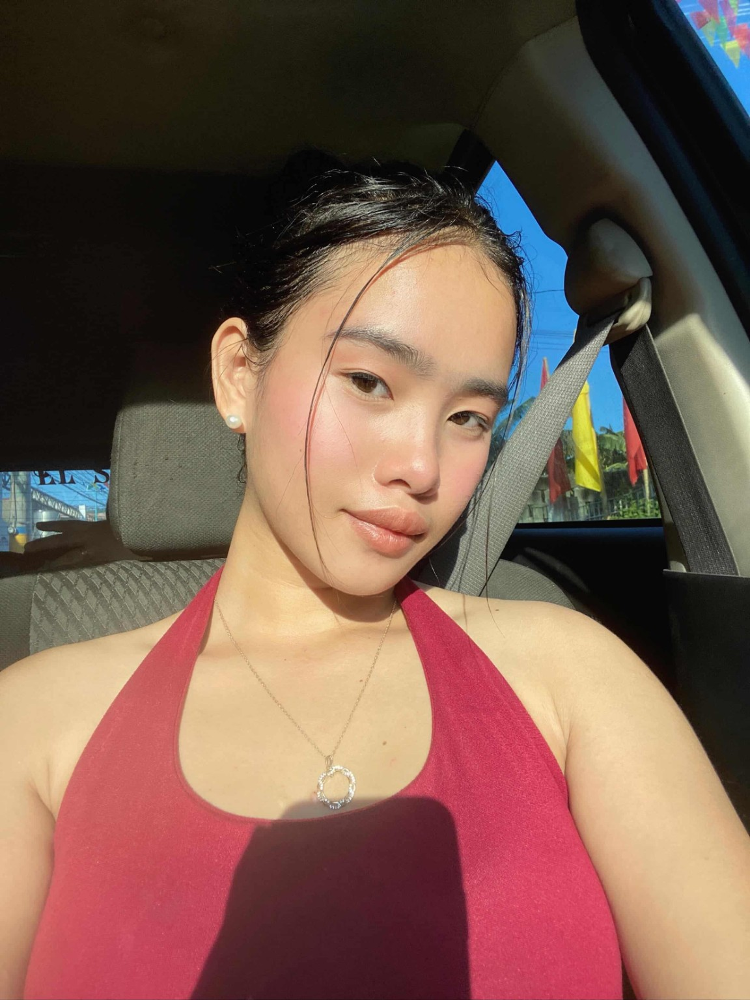

Education
Grade 12 · Accountancy, Business and Management (ABM)

Hearthy LynPERSONAL PORTFOLIOWELCOME TO MY WORLD · 2025—2026
Hello, I'm Hearthy Lyn F. De Torres, a Grade 12 ABM student at Datamex College of Saint Adeline. This is a little space for my milestones, creativity, and everything I'm learning along the way.
01 / THE PERSON BEHIND THE PORTFOLIO
My background, interests, and the values that guide my growth.
Senior High School student · Datamex College of Saint Adeline
I am an 18-year-old Senior High School student who enjoys learning, exploring creative ideas, and taking part in experiences that help me grow. Through school activities and academic challenges, I continue to build confidence, responsibility, and a better understanding of what I want for my future.
I value patience, respect, teamwork, and continuous improvement. I believe every experience—big or small—can teach me something worth carrying forward.
Grade 12 · Accountancy, Business and Management (ABM)
Business, creativity, digital tools, communication, and learning new things.
To complete my studies and keep building skills for future opportunities.
02 / THINGS I'M DEVELOPING
Abilities shaped by practice, schoolwork, and working with others.
Sharing ideas clearly, listening actively, and contributing respectfully to discussions.
Cooperating with classmates, sharing responsibilities, and working toward a common goal.
Using common productivity tools, online resources, and digital platforms for school tasks.
Exploring ideas, approaching tasks with an open mind, and trying different ways to solve challenges.
Planning school responsibilities, organizing information, and keeping tasks on track.
03 / A COLLECTION OF OUTPUTS
A place for academic work, writing, and ideas brought to life.
A short reflective poem about learning, courage, and moving toward future goals.
Every dream begins somewhere,
with a quiet hope and a little care.
A collection space for research papers, written reports, subject activities, and performance tasks.
Add verified school outputs and a short note about what each one taught me.
Class presentations and collaborative outputs that help develop confidence and clear communication.
A record of learning through sharing ideas.
04 / LEARNING BY DOING
Experiences that connect classroom learning with practical skills.
A digital portfolio designed to introduce who I am and organize my academic journey, skills, creative interests, projects, and achievements. Building this website is also an opportunity to explore how digital tools can communicate a personal story.
Taking part in school events and community activities while learning to engage with others.
Sharing ideas, coordinating responsibilities, and contributing to team outcomes.
05 / HIGHLIGHTS · MILESTONES · MEMORIES
Choose a highlight to open its story. Explore the photos, recognition, and meaning behind each 2025 achievement.
Tap any card to view its full story and photo gallery. Use the close button or press Escape to return here.
06 / LOOKING BACK, MOVING FORWARD
Every experience adds another page to the story.
My Senior High School journey is teaching me that learning takes patience, effort, and an open mind. Each school task gives me a chance to practice new skills and understand lessons more deeply. When an activity feels difficult, I try to review the instructions, organize my ideas, ask questions, and try again.
Working with classmates reminds me to listen, communicate clearly, and respect different ideas. Creating this portfolio has helped me see how my school experiences can be organized and presented. I want to continue improving my confidence, digital skills, and ability to express my thoughts. I know I still have more to learn, and I look forward to the opportunities ahead.
07 / READY TO PRINT
A student resume focused on education, academic projects, and developing skills—not personal employment history.
Grade 12 ABM Student · Aspiring Business Professional
Motivated Grade 12 ABM student interested in business, marketing, and organization. Developing skills in communication, teamwork, research, and digital productivity through classroom activities and academic projects. Eager to learn, take on new challenges, and build a strong foundation for future studies and career opportunities.
Senior High School · Grade 12–ABM
Secondary Education
Primary Education
Practiced identifying target audiences, describing customer needs, preparing promotional ideas, and presenting recommendations in classroom activities.
Gathered and organized information, prepared written outputs, delivered class presentations, and used feedback to improve academic work.
08 / LET'S CONNECT
Thank you for taking the time to explore my story and school journey.
For school-related or professional inquiries, you may reach me through the contact details below.
✉ hearthylyndetorres@gmail.com☎ 0963-703-9973⌖ Bacoor City, Cavite, PhilippinesThis portfolio is not the finish line. It is a snapshot of how far I have come—and a reminder of how much more I can become.